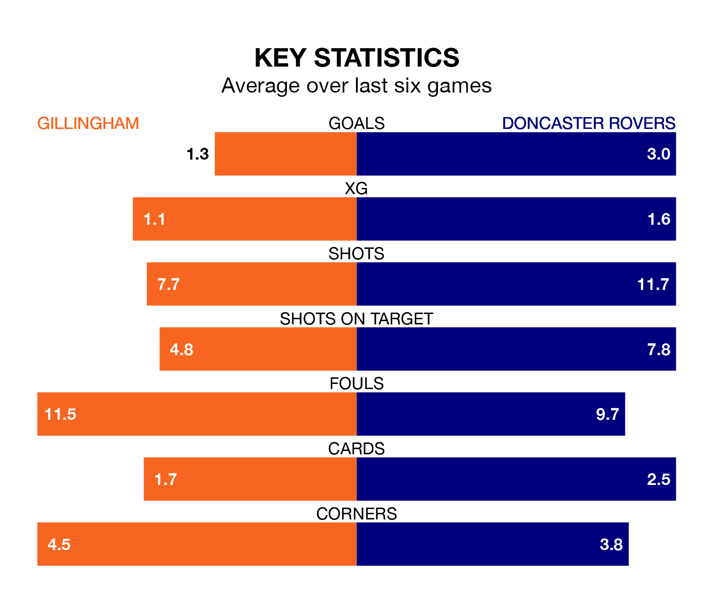

Doncaster Rovers visit Gillingham at the MEMS Priestfield Stadium on Saturday on the back of 10 consecutive wins in EFL League Two.
It means Doncaster have picked up the maximum 30 points from their last 10 games, and they face a Gills side who lost their last match, and have collected nine points from the last possible 30.
With 44 goals in 45 games so far this season, Gillingham are the league's second-lowest scorers with 1.0 goals per game. But they are conceding fewer than average too, letting in 55 goals at a rate of 1.2 per game.
Doncaster, meanwhile, are above average scorers, with 1.6 goals per game, compared to a league average of 1.5. They have conceded 1.5 goals per game.
In the last 10 years, Gillingham and Doncaster have played each other on 18 occasions. Gillingham won seven of them, Doncaster four, and they drew seven times.
On average, the Gills scored 1.3 goals and the Rovers 1.1 in those matches.
Their last meeting was on September 23, when Doncaster won 2-1 at home.
Rovers are fifth in the table after 45 games, of which they have won 21 and drawn seven, earning 70 points.
The Gills are six places behind the Rovers in 11th, with 18 wins and nine draws putting them on 63 points.
In Joe Ironside, the visitors have one of the league's sharpest shooters so far this season. He has notched 19 goals in 44 appearances, to sit seventh in the scoring charts.
His goal rate of one every 188 minutes is much quicker than that of Connor Mahoney, the home side's top scorer with a goal every 416 minutes, and a total of seven goals in 38 games.
Gillingham's last match was on April 20, a 2-1 loss against Mansfield Town, with Timothee Dieng getting the goal for the Gills.
Doncaster beat Colchester United 4-1 last time out, on Tuesday, with Harrison Biggins, Ironside, Luke Molyneux and Tom Anderson on the scoresheet.
Updated: 07:59 (UTC), 26/04/24